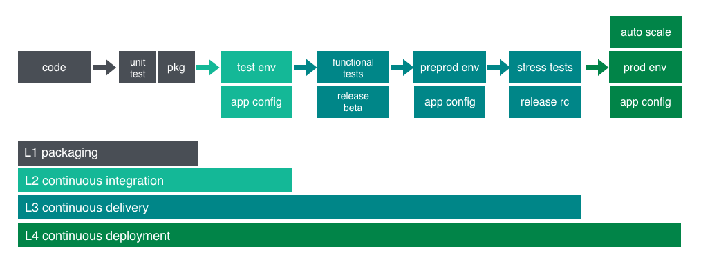

There are two phases called Continuous Delivery and continuous Deployment

Continuous Delivery and Continuous Deployment have a lot in common... The key difference is that with Continuous Deployment, the application is run through an AUTOMATED pipeline work flow. Whereas with Continuous Delivery, the application is ready to be deployed whenever the team decides it's time to do so (MANUALLY).